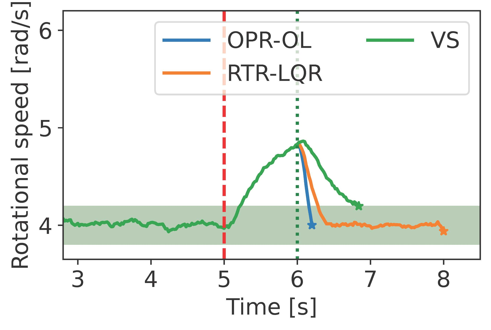
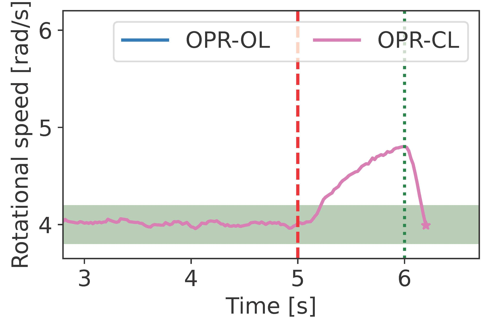
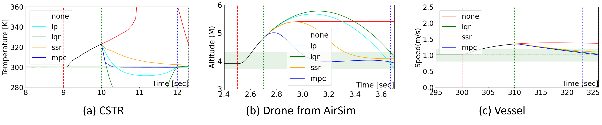
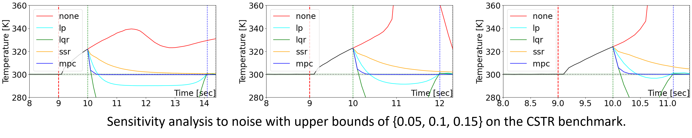
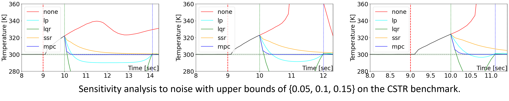
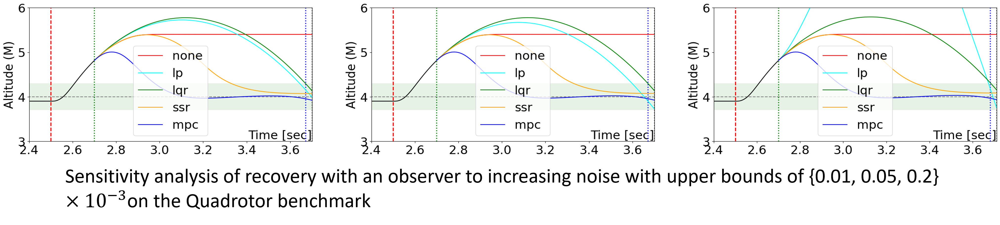

Examples
Block World Problem
In this problem, we require the LLM to generate a plan to control a robotic arm to stack blocks on a plane as specified.
We read the prompts from a file and instruct the LLM to generate FOL specifications in the format required by the Z3 Python API. The first prompt for querying the formula specification is shown as below.
You are a motion planner who want to use Z3 to verify your plan. When I ask you to write me the code, please give me the full code.
Now we consider the block workld planning problem.
The objects in the problem domain include a finite number of cubical blocks, and a table large enough to hold all of them. Each block is on a single other object (either another block or the table). For each block b, either b is clear or else there is a unique block a sitting on b. There is one kind of action: move a single clear block, either from another block onto the table, or from an object onto another clear block. As a result of moving b from c onto d, b is sitting on d instead of c, c is clear (unless it is the table), and d is not clear (unless it is the table).
A problem in this domain is specified by giving two sets of ground atoms, one specifying an initial state of the world, and the other specifying necessary and sufficient conditions for a state to be a goal state. A solution to this problem is a plan capable of transforming the initial state into a state satisfying the goal conditions.
In the plan you provided, you can only use four operations instead of the action move a single clear block: pick_up, put_down, stack, unstack. I'll give the details of these operations later.
Pick_up:
The block must be clear and on the table in state s1. The block must not be in the hand in state s1. The block must be in the hand in state s2. The block must not be on the table in state s2 and must not be clear.
For all other blocks x, the state of the hand, table, and clear should remain the same between s1 and s2.
For all blocks x, y, the state of the stacked should remain the same between s1 and s2.
Put_down:
The block must be in the hand in state s1. The block must not be on the table in state s1. The block must not be in the hand in state s2. The block must be on the table in state s2 and must be clear.
For all other blocks x, the state of the hand, table, and clear should remain the same between s1 and s2.
For all blocks x, y, the state of the stacked should remain the same between s1 and s2.
Stack:
In all cases, the following should be true when executing the stack(block1, block2) operation.: For all other blocks x other than these two blocks, the state of the hand, table, and clear should remain the same between the states s1 and s2. For all blocks x, y, where neither x is block1, nor y is block2, the state of being stacked should remain the same between s1 and s2.
There are two cases: either a block is stacked from the table or a block is stacked from the hand.
If the block1 is being stacked from the table, then the following is true: The block1 must be on the table in state s1. Neither block1 nor block2 should be stacked on each other in state s1. Both block1 and block2 must be clear, i.e., not having andy block on them, in state s1. The agent's hand should be free in state s1. The block1 must not be in the agent's hand nor on the table in state s2. The block1 must be stacked on block2 in state s2. The block1 must be clear, while block2 must not be clear in state s2. The agen's hand should be free in state s2.
Unstack:
In all cases, the following should be true when executing the unstack(block1, block2) operation. For all other blocks x other than these two blocks, the state of the hand, table, and clear should remain the same between the states s1 and s2. For all blocks x and y, where neither x is block1, nor y is block2, the state of being stacked should stay the same between s1 and s2.
There are two cases: either a block is unstacked to the table or a block is unstacked to the hand.
If the block1 is being unstacked from the block2 to the table, then the following must be true: The blocks block1 and block2 must be stacked in state s1, with block1 clear and the agent's hand free. In state s2, block1 should not be stacked on block2 but should be on the table. In state 2, both block1 and block2 should be clear, and the agent's hand should be free.
If the block1 is being unstacked from the block2 to the hand, then the following must be true: The blocks block1 and block2 must be stacked in state s1, with block1 clear and the agent's hand free. In state s2, block1 should not be stacked on block2 but should be in the agent's hand. The block2 should be clear, but block1 should not be clear, and the agent's hand should not be free.
Above are the details of these operations.
I will use Z3 to verify future plans. please help me complete the following code in which translate all the above four actions into first order logic using the the formatting of Z3 Pyhton API.
Please do not alter the code within the provided class State.
Your response should include all the code, starting with 'from z3 import *'.
Below is the incomplete code. I have already implemented the pick_up, stack functions for your reference.
from z3 import *
# State class definition
class State:
def __init__(self, name, num_blocks):
self.table = Function(f'{name}_table', IntSort(), BoolSort())
self.hand = Function(f'{name}_hand', IntSort(), BoolSort())
self.stacked = Function(f'{name}_stacked', IntSort(), IntSort(), BoolSort())
self.clear = Function(f'{name}_clear', IntSort(), BoolSort())
self.handsfree = Function(f'{name}_handsfree', IntSort(), BoolSort())
self.num_blocks = num_blocks
def is_same_for_other_blocks(self, other, block):
return And([And(self.table(x) == other.table(x),
self.hand(x) == other.hand(x),
self.clear(x) == other.clear(x))
for x in range(1, self.num_blocks + 1) if x != block])
def is_stacked_same(self, other):
return And([self.stacked(x, y) == other.stacked(x, y)
for x in range(1, self.num_blocks + 1) for y in range(1, self.num_blocks + 1)])
# Action definitions
def pick_up(s1, s2, block):
preconditions = And(s1.clear(block), s1.table(block), Not(s1.hand(block)), s1.handsfree())
effects = And(s2.hand(block), Not(s2.table(block)), Not(s2.clear(block)),
s1.is_same_for_other_blocks(s2, block),
s1.is_stacked_same(s2))
return And(preconditions, effects)
def put_down(s1, s2, block):
def stack(s1, s2, block1, block2):
preconditions = And(s1.clear(block1), s1.clear(block2), s1.handsfree())
effects = And(s2.stacked(block1, block2), s2.clear(block1), Not(s2.clear(block2)),
s1.is_same_for_other_blocks(s2, block1),
s1.is_same_for_other_blocks(s2, block2),
s1.is_stacked_same(s2))
return And(preconditions, effects)
def unstack(s1, s2, block1, block2):
We compare the performance of our solution, called the open loop OPR (OPR-OL), with the LQR-based recovery [2], and virtual sensors. We then obtain the next Figure:
{kind=link}
We also include the simulations to improve our solution by incorporating the non-compromised sensors into the recovery. We call this strategy the partially closed loop OPR (OPR-PCL). We compare the OPR-OL and OPR-PCL:
{kind=link}
We provide the code to obtain previous figures.
An user can change the attack characteristics (e.g., detection delay).
Navigation Problem
In this file, we choose a benchmark plant, CSTR shown in the following figure, controlled by a PID controller. Also, we define the bias sensor attack that subtracts 25K from the temperature sensor feedback starting from the ninth second. The detector identifies the attack at the 10th second, and triggers the recovery controllers. Baseline recovery controllers include (i) no recovery method (none), (ii) software-sensor-based recovery (ssr [1]), (iii) linear-quadratic-regulator-based recovery (lqr [2]), and (vi) data-predictive recovery (mpc [3]).
First, we aim to evaluate the recovery performance of different baseline recovery controllers. We only require modifying the configuration file rather than writing simulation code. In this file, we use three benchmark plants, CSTR, quadrotor and Vessel, controlled by a PID controller. Also, we define the bias sensor attack. The detector identifies the attack after the attack happends and triggers the recovery controllers. Baseline recovery controllers include (i) no recovery method (none), (ii) software-sensor-based recovery (ssr [1]), (iii) linear-quadratic-regulator-based recovery (lqr [2]), and (vi) data-predictive recovery (mpc [3]).
The following figure plots the results from the simulator. From the curve, we can intuitively analyze the recovery performance of each baseline recovery controller.
{kind=link}
We conduct a sensitivity analysis by varying bias values and noise on the CSTR benchmark. The findings are displayed in the two figures below.
 

{kind=link}
We also provide the sensitivity analysis by the noise with varying upper bound on the quadrotor benchmark.
{kind=link}
We provide the source code of above figures.
Reference: